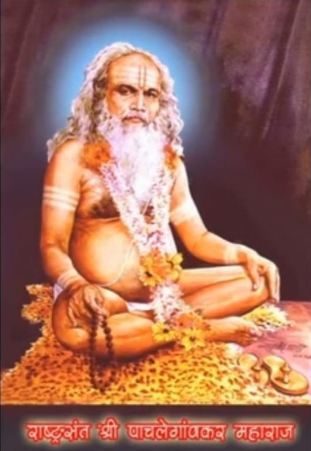

श्री संचारेश्वर पंचपदी

पंचपदी पद - १
पंचपदी पद - २
पंचपदी पद - ३
पंचपदी पद - ४
पंचपदी पद - ५
पंचपदी ऑडिओ
🏠 मुख्य पान